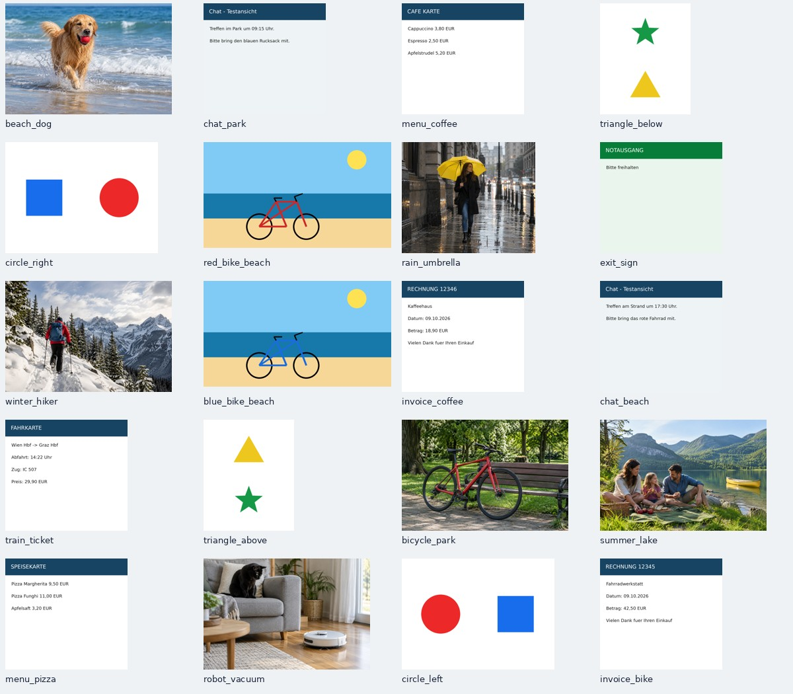

Welche Suche findet das richtige Bild?
20 künstliche Bilder · 62 festgelegte Anfragen · tatsächlich erzeugte Media-AI-Metadaten · 768 Dimensionen
| Verfahren | Richtig auf Platz 1 | Richtig unter ersten 5 | MRR |
|---|
Media-AI-Metadaten der erwarteten Bilder
Testbestand ansehen

Messung und Grenzen
Normale Suche: echte Nextcloud-32-Dateisuche über HTTP in einer eigenen lokalen Instanz. Media AI: unveränderte PHP-Suche mit echtem MariaDB-Volltextindex. Text-Embeddings: Beschreibung, Tags, Objekte und OCR; keine Dateinamen. Bild-Embeddings: direkte Bildpixel mit 140 Bild-Tokens. Kombination: zwei getrennte Vektoren je Bild und gleich gewichtete Rangfusion (RRF, k=60); keine zusätzliche Wortsuche.
52 Inhaltsanfragen, sechs Dateinamen-Kontrollen, vier bewusst fehlende Inhalte. Die dichten Suchverfahren liefern ohne separat kalibrierte Mindestschwelle immer eine Trefferliste. Ein hoher Ähnlichkeitswert ist keine Wahrscheinlichkeit, dass das gesuchte Bild existiert.
Kleiner, künstlicher, bewusst diagnostischer Bestand. Die Anfragen sind teilweise miteinander verwandt. Kein Nachweis für Qualität bei 30.000 echten Fotos, keine Messung am Handy. Maximal 768 Dimensionen; optimierte quantisierte Modellvarianten, nicht die unquantisierten Originalgewichte. Die 30.000-Vektor-Messung wiederholt die 20 Vektoren und prüft ausschließlich Rechenzeit.
Ausführlicher Bericht · Vollständige Ergebnisse · Vorab festgelegtes Testverfahren